1. Mục đích và phạm vi
Phân hệ Đào tạo của VIN-HRM là hệ thống quản lý học tập nội bộ. Cán bộ phụ trách đào tạo có thể xây dựng khóa học, tổ chức nội dung theo phiên bản, tạo bài học và bài kiểm tra; nhân viên có thể đăng ký, học, làm bài và theo dõi kết quả của chính mình. Tài liệu này hướng dẫn trọn vẹn năm chức năng: Khóa học, Bài học, Đăng ký học, Khóa học của tôi và Kết quả học tập.
Phân hệ được thiết kế cho người dùng nội bộ đã có hồ sơ nhân viên và tài khoản hợp lệ trên VIN-HRM. Khóa học không được công bố công khai ra ngoài hệ thống. Phạm vi tài liệu bao gồm các thao tác trên giao diện hiện tại, ý nghĩa của từng lựa chọn cấu hình, điều kiện phát hành, quy tắc học và thi, luồng phê duyệt đăng ký, kết quả học tập và chứng nhận.
1.1. Luồng nghiệp vụ tổng quát
| 1. Setup khóa học Tạo bài học và ngân hàng câu hỏi; tạo khóa học/phiên bản; cấu hình tham gia, thứ tự học, kiểm tra và chứng nhận; kiểm tra điều kiện rồi phát hành. |
| ↓ |
| 2. Đăng ký hoặc tham gia Nhân viên chọn Học ngay hoặc gửi đăng ký khi khóa học yêu cầu phê duyệt. |
| ↓ |
| 3. Phê duyệt đăng ký (nếu áp dụng) Người duyệt chấp thuận hoặc từ chối. Đăng ký được duyệt xuất hiện trong Khóa học của tôi. |
| ↓ |
| 4. Học tập và làm bài Nhân viên học nội dung, xác nhận hoàn thành, tham dự trực tuyến và làm bài kiểm tra hoặc bài thi cuối khóa. |
| ↓ |
| 5. Ghi nhận kết quả và chứng nhận Hệ thống tính tiến độ, xác định Đạt/Chưa đạt và tạo hồ sơ duyệt/ký chứng nhận nếu có. |
| ↓ |
| 6. Theo dõi kết quả Nhân viên xem kết quả của mình; người quản lý xem tổng quan theo quyền và phạm vi dữ liệu được cấp. |
1.2. Các khái niệm cần hiểu
| Khái niệm | Giải thích |
|---|---|
| Khóa học | Là đơn vị đào tạo hoàn chỉnh, có mã, tên, mô tả, cách tham gia và một hoặc nhiều phiên bản nội dung. |
| Phiên bản khóa học | Là ảnh chụp cấu trúc và cấu hình của khóa học tại một thời điểm, ví dụ V1, V2. Người đã học V1 vẫn giữ lịch sử V1 khi V2 được phát hành. |
| Bài học | Là nội dung có thể tái sử dụng ở nhiều phiên bản khóa học. Bài học có thể là tài liệu/video thông thường hoặc buổi học trực tuyến. |
| Ngân hàng câu hỏi | Là tập câu hỏi gắn với một bài học. Bài kiểm tra của bài học và bài thi cuối khóa lấy câu hỏi đang hoạt động từ ngân hàng này. |
| Đăng ký học | Là quan hệ giữa nhân viên và một phiên bản khóa học. Trạng thái đăng ký thể hiện đang chờ duyệt, đã duyệt, đang học, hoàn thành, không đạt, bị từ chối hoặc đã hủy. |
| Tiến độ | Tỷ lệ phần nội dung bắt buộc người học đã hoàn thành. Tiến độ 100% chưa chắc đồng nghĩa đạt nếu bài thi cuối khóa chưa đạt. |
| Chứng nhận | Tài liệu xác nhận hoàn thành được sinh từ Mẫu tài liệu và đi qua quy trình duyệt/ký đã chọn. Chứng nhận chỉ có hiệu lực sau khi hoàn tất quy trình. |
2. Điều kiện chuẩn bị, cấu hình và quyền sử dụng
2.1. Dữ liệu cần chuẩn bị
- Người học phải có hồ sơ nhân viên đang sử dụng được và tài khoản đăng nhập VIN-HRM hợp lệ.
- Người biên soạn phải được cấp quyền tương ứng để quản lý khóa học, bài học hoặc câu hỏi.
- Nếu khóa học yêu cầu duyệt đăng ký, hệ thống phải có quy trình phê duyệt loại Duyệt đăng ký học đang hoạt động và xác định được người xử lý.
- Nếu khóa học cấp chứng nhận, cần chuẩn bị Mẫu tài liệu loại Chứng nhận đào tạo và quy trình duyệt/ký chứng nhận đang hoạt động.
- Nếu bài học có kiểm tra hoặc khóa học có bài thi cuối khóa, cần chuẩn bị đủ câu hỏi hợp lệ, đang hoạt động trong các bài học thuộc phiên bản.
2.2. Quyền và phạm vi dữ liệu
| Quyền/chủ thể | Phạm vi sử dụng |
|---|---|
| Quản lý khóa học | Tạo và quản lý khóa học, thiết kế phiên bản, thêm bài học, cấu hình kiểm tra, phát hành, tạm dừng, mở lại hoặc đóng khóa học. |
| Quản lý bài học | Tạo, sửa, kích hoạt, ngừng hoạt động hoặc xóa bài học theo điều kiện hệ thống cho phép. |
| Quản lý câu hỏi | Thêm, nhập, xuất, sửa, ngừng hoạt động hoặc xóa câu hỏi trong ngân hàng câu hỏi của bài học. |
| Duyệt đăng ký học | Xem và xử lý yêu cầu tại bước mà tài khoản được xác định là người xử lý. |
| Duyệt/ký chứng nhận | Xử lý hồ sơ chứng nhận theo bước duyệt hoặc ký trong quy trình đã cấu hình. |
| Xem kết quả đào tạo | Xem tổng quan kết quả theo quyền và phạm vi tổ chức. Quyền xem toàn bộ cho phép truy cập phạm vi rộng hơn quyền xem thông thường. |
| Nhân viên | Đăng ký các khóa được công bố, học phiên bản đã tham gia và chỉ xem dữ liệu học tập của chính mình. |
2.3. Cấu hình nào ảnh hưởng đến phân hệ Đào tạo?
Không có một cấu hình mặc định chung tại màn hình Cấu hình hệ thống quyết định toàn bộ phân hệ Đào tạo. Các lựa chọn quan trọng được đặt ngay trên từng khóa học, từng phiên bản và từng bài kiểm tra. Nhờ vậy, mỗi khóa có thể áp dụng quy tắc khác nhau mà không làm thay đổi các khóa còn lại.
| Nhóm cấu hình | Nơi thiết lập | Ảnh hưởng |
|---|---|---|
| Cách đăng ký/tham gia | Khóa học/phiên bản | Quyết định nhân viên học ngay hay phải chờ phê duyệt. |
| Phương thức mở bài học | Khóa học/phiên bản | Quyết định học tự do hay phải hoàn thành theo thứ tự. |
| Bài kiểm tra bài học | Liên kết bài học trong phiên bản | Quy định số câu, điểm đạt, thời gian, số lần thi lại, cách tính điểm và nội dung kết quả được hiển thị. |
| Bài thi cuối khóa | Cấu hình phiên bản | Quyết định có yêu cầu thi cuối khóa và điều kiện đạt cuối cùng hay không. |
| Chứng nhận | Cấu hình phiên bản | Quyết định có sinh chứng nhận, dùng mẫu nào và đi qua quy trình duyệt/ký nào. |
| Lịch học trực tuyến | Cấu trúc phiên bản | Quy định giảng viên, thời gian và đường dẫn tham gia của bài học trực tuyến trong chính phiên bản đó. |
| Cấu hình gắn với phiên bản, không gắn với lịch sử cũ Khi một phiên bản đã phát hành có người học, nên tạo phiên bản nháp mới để thay đổi. Người học cũ tiếp tục học và được ghi nhận theo phiên bản đã đăng ký; việc phát hành V2 không tự chuyển tiến độ V1 sang V2. |
3. Quản lý Khóa học
3.1. Mở danh sách và đọc thông tin
Mở Đào tạo > Khóa học. Đây là màn hình quản trị, không phải danh sách dành cho nhân viên đăng ký. Người dùng có thể tìm theo mã hoặc tên khóa học, lọc trạng thái khóa và trạng thái phiên bản, sau đó chọn Xóa bộ lọc để trở lại danh sách đầy đủ.
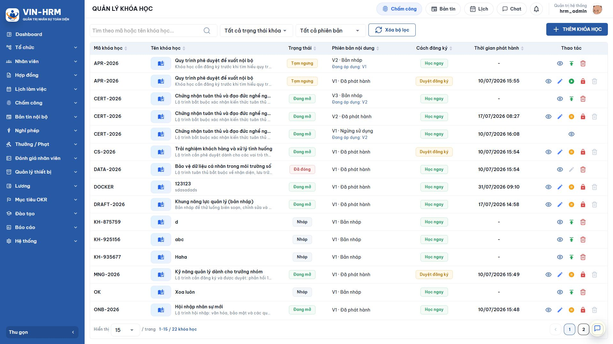
| Thông tin | Ý nghĩa |
|---|---|
| Mã khóa học | Mã nhận diện duy nhất. Có thể nhập khi tạo hoặc để hệ thống tự sinh theo dạng KH-######. |
| Tên khóa học | Tên hiển thị trong danh mục đăng ký, khóa học của người học và các báo cáo. |
| Trạng thái khóa | Cho biết toàn bộ khóa đang là Bản nháp, Đang mở, Tạm dừng hay Đã đóng. |
| Phiên bản | Cho biết phiên bản đang xem là bản nháp, đã phát hành hay đã ngừng hoạt động. |
| Cách tham gia | Hiển thị Học ngay hoặc Cần phê duyệt để quản trị viên nhận biết luồng đăng ký. |
| Thời gian phát hành | Thời điểm phiên bản được công bố cho người học. Bản nháp chưa phát hành sẽ không có thời gian. |
3.2. Trạng thái khóa học và phiên bản
| Nhóm | Trạng thái | Ý nghĩa sử dụng |
|---|---|---|
| Khóa học | Bản nháp | Khóa đang được xây dựng, chưa mở cho nhân viên. Quản trị viên có thể tiếp tục thiết kế hoặc xóa nếu chưa phát sinh dữ liệu ràng buộc. |
| Khóa học | Đang mở | Khóa có phiên bản đã phát hành và cho phép nhân viên nhìn thấy, đăng ký hoặc tiếp tục học. |
| Khóa học | Tạm dừng | Tạm ngăn đăng ký mới hoặc thao tác học theo chính sách hệ thống, nhưng vẫn giữ toàn bộ dữ liệu để có thể mở lại. |
| Khóa học | Đã đóng | Kết thúc vận hành khóa. Lịch sử của người học được giữ để tra cứu; nội dung cũ chủ yếu ở chế độ xem lại. |
| Phiên bản | Bản nháp | Cấu trúc đang biên soạn và chưa được công bố. |
| Phiên bản | Đã phát hành | Nội dung chính thức mà người học có thể đăng ký và học. |
| Phiên bản | Ngừng hoạt động | Phiên bản không còn dùng để nhận người học mới nhưng lịch sử đã phát sinh vẫn được giữ. |
3.3. Tạo khóa học
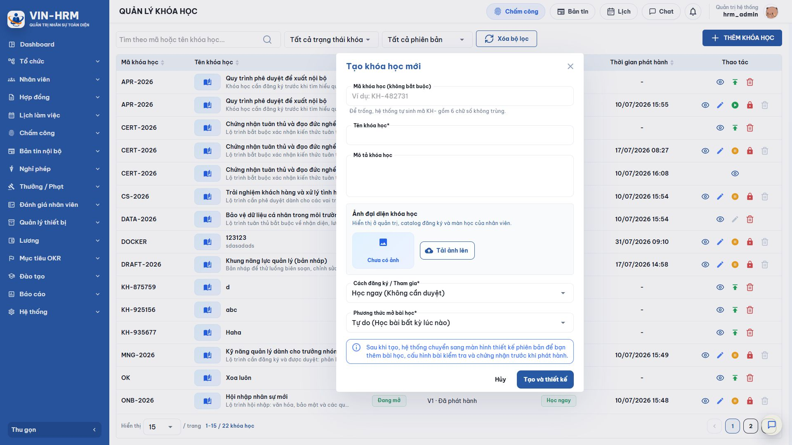
- Trên danh sách Quản lý khóa học, chọn Thêm khóa học.
- Nhập Mã khóa học nếu doanh nghiệp có quy ước riêng. Nếu để trống, hệ thống tự sinh mã bắt đầu bằng KH- và sáu chữ số không trùng.
- Nhập Tên khóa học. Đây là trường bắt buộc và nên thể hiện rõ chủ đề, đối tượng hoặc kỳ đào tạo.
- Nhập Mô tả khóa học để người học hiểu mục tiêu, phạm vi và kết quả mong đợi.
- Tải Ảnh đại diện nếu có. Ảnh được dùng ở danh mục đăng ký, Khóa học của tôi và màn hình học.
- Chọn Cách đăng ký/Tham gia và Phương thức mở bài học theo bảng giải thích bên dưới.
- Nếu chọn Cần phê duyệt, chọn quy trình duyệt đăng ký học đang hoạt động.
- Chọn Tạo và thiết kế. Hệ thống lưu khóa cùng phiên bản V1 ở trạng thái Bản nháp và chuyển sang trang chi tiết phiên bản.
Ý nghĩa các lựa chọn khi tạo khóa học
| Cấu hình | Lựa chọn | Ý nghĩa và trường hợp sử dụng |
|---|---|---|
| Cách đăng ký/Tham gia | Học ngay (Không cần duyệt) | Khi nhân viên chọn Tham gia ngay, hệ thống tạo đăng ký và cho phép vào học lập tức. Phù hợp khóa tự học, tài liệu phổ biến hoặc nội dung mở cho toàn doanh nghiệp. |
| Cách đăng ký/Tham gia | Cần phê duyệt | Nhân viên phải gửi yêu cầu và chỉ học sau khi được duyệt. Phù hợp khóa giới hạn số lượng, yêu cầu quản lý xác nhận, có chi phí hoặc cần kiểm tra đối tượng. |
| Phương thức mở bài học | Tự do | Người học có thể mở các bài theo bất kỳ thứ tự nào. Phù hợp bộ tài liệu tra cứu hoặc các bài độc lập. |
| Phương thức mở bài học | Tuần tự | Bài sau bị khóa cho tới khi bài trước hoàn thành theo yêu cầu. Phù hợp lộ trình có kiến thức nối tiếp hoặc chương trình bắt buộc. |
3.4. Cấu hình phiên bản khóa học
Trang Chi tiết phiên bản khóa học có hai thẻ: Cấu hình và Cấu trúc. Thẻ Cấu hình chứa thông tin hiển thị, cách học, bài thi cuối khóa và chứng nhận. Thẻ Cấu trúc dùng để thêm và sắp xếp bài học, đặt bài bắt buộc, lịch trực tuyến và bài kiểm tra của từng bài.
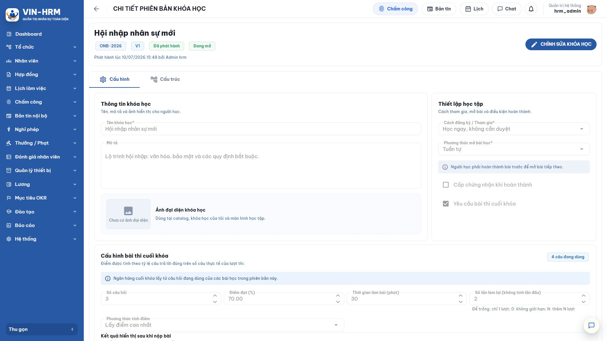
Cấu hình bài thi cuối khóa
Bật Yêu cầu bài thi cuối khóa khi kết quả khóa học phải được xác nhận bằng một bài thi tổng hợp. Ngân hàng câu hỏi cuối khóa được lấy từ các câu hỏi đang hoạt động của những bài học thuộc phiên bản. Chỉ bật khi cấu trúc đã có ít nhất một bài học.
| Cấu hình | Giá trị/lựa chọn | Ý nghĩa |
|---|---|---|
| Số câu hỏi | Số nguyên lớn hơn 0 | Số câu được lấy ngẫu nhiên cho mỗi lượt thi. Trước khi phát hành, tổng số câu hợp lệ đang hoạt động phải không nhỏ hơn số này. |
| Điểm đạt (%) | 0–100 | Ngưỡng phần trăm người học phải đạt. Ví dụ 70 nghĩa là điểm từ 70% trở lên được xem là đạt. |
| Thời gian làm bài | Số phút | Giới hạn cho một lượt. Khi hết thời gian, hệ thống tự nộp những đáp án đã lưu. |
| Số lần làm lại | Để trống | Người học chỉ có một lượt thi ban đầu, không có lượt làm lại. |
| Số lần làm lại | 0 | Cho phép làm lại không giới hạn. |
| Số lần làm lại | N lớn hơn 0 | Cho phép thêm N lượt sau lượt đầu. Ví dụ nhập 2 nghĩa là tối đa ba lượt: một lượt đầu và hai lượt làm lại. |
| Phương thức tính điểm | Lấy điểm cao nhất | Kết quả được xác định theo lượt có điểm cao nhất. Phù hợp khi khuyến khích người học cải thiện. |
| Phương thức tính điểm | Lấy điểm trung bình | Kết quả là trung bình các lượt đã nộp. Phù hợp khi muốn phản ánh mức độ ổn định qua nhiều lần làm. |
| Hiển thị điểm | Bật/Tắt | Quyết định người học có thấy điểm sau khi nộp hay không. |
| Hiển thị đúng/sai từng câu | Bật/Tắt | Cho biết câu nào trả lời đúng hoặc sai nhưng chưa nhất thiết chỉ ra đáp án đúng. |
| Hiển thị đáp án đúng | Bật/Tắt | Cho phép xem đáp án đúng sau khi nộp. Nên cân nhắc tắt với bài thi cần bảo mật hoặc còn nhiều lượt thi lại. |
| Cách hệ thống tính điểm Điểm một lượt = số câu trả lời đúng chia cho số câu thực tế của lượt thi, nhân 100. Với câu nhiều lựa chọn, người học phải chọn đúng toàn bộ tập đáp án và không chọn thêm đáp án sai thì câu mới được tính đúng. |
Cấu hình chứng nhận
Bật Cấp chứng nhận khi hoàn thành khi doanh nghiệp cần phát hành văn bản xác nhận. Sau khi bật, chọn mẫu tài liệu loại Chứng nhận đào tạo và quy trình duyệt/ký chứng nhận. Nếu quy trình có bước ký, hình thức ký được thực hiện theo cấu hình của bước, ví dụ ký bằng ảnh/chữ ký điện tử hoặc thiết bị ký số, chứng thư P12.
Chứng nhận không có hiệu lực ngay khi người học hoàn thành. Hệ thống tạo hồ sơ chứng nhận ở trạng thái chờ và chuyển đến các bước xử lý. Người học chỉ tải hoặc sử dụng chứng nhận sau khi quy trình đã hoàn tất.
3.5. Xây dựng cấu trúc khóa học
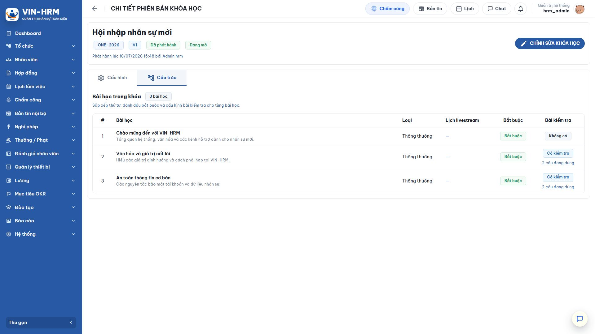
- Mở thẻ Cấu trúc và chọn Thêm bài học.
- Chọn một hoặc nhiều bài học đang hoạt động. Một bài học có thể được tái sử dụng ở nhiều khóa hoặc nhiều phiên bản.
- Sắp xếp đúng thứ tự học. Thứ tự đặc biệt quan trọng khi khóa dùng phương thức mở bài Tuần tự.
- Đánh dấu Bắt buộc với những bài phải hoàn thành để tính hoàn thành khóa. Bài không bắt buộc là nội dung bổ sung.
- Với bài học thông thường, cấu hình bài kiểm tra nếu cần. Với bài học trực tuyến, thêm ít nhất một lịch học hợp lệ gồm giảng viên, thời gian và đường dẫn tham gia.
- Lưu thay đổi và kiểm tra cảnh báo sẵn sàng phát hành.
Cấu hình bài kiểm tra của từng bài học
Các lựa chọn số câu, điểm đạt, thời gian, số lần làm lại, cách tính điểm và hiển thị kết quả có cùng ý nghĩa như bài thi cuối khóa. Ngoài ra, bài kiểm tra bài học có thể được đánh dấu Bắt buộc hoặc Không bắt buộc. Nếu bắt buộc, người học phải đạt bài kiểm tra thì bài học mới hoàn tất; nếu không bắt buộc, bài kiểm tra dùng để tự đánh giá và không chặn tiến độ khóa.
3.6. Kiểm tra và phát hành phiên bản
Trước khi chọn Phát hành, kiểm tra toàn bộ danh sách sau:
- Đã lưu hết các thay đổi; không còn dữ liệu chỉnh sửa chưa lưu.
- Phiên bản có ít nhất một bài học đang sử dụng được.
- Mỗi bài kiểm tra được bật có số câu, điểm đạt, thời gian và số lần thi hợp lệ.
- Số câu hỏi đang hoạt động đủ đáp ứng số câu đã cấu hình cho từng bài kiểm tra và bài thi cuối khóa.
- Mỗi bài học trực tuyến có ít nhất một lịch học hợp lệ.
- Nếu Cần phê duyệt, đã chọn quy trình duyệt đăng ký hợp lệ.
- Nếu cấp chứng nhận, đã chọn đúng mẫu chứng nhận và quy trình duyệt/ký.
| Có thể lưu nháp nhưng chưa chắc phát hành được Hệ thống cho phép lưu cấu hình đang biên soạn để tiếp tục hoàn thiện. Tuy nhiên, nút Phát hành sẽ bị chặn khi thiếu câu hỏi, thiếu lịch học trực tuyến, thiếu quy trình hoặc cấu hình kiểm tra chưa hợp lệ. Hãy đọc cảnh báo sẵn sàng phát hành và sửa từng mục. |
3.7. Sửa phiên bản đã phát hành
Nếu phiên bản đã phát hành chưa có người học, hệ thống có thể cho phép mở lại để chỉnh sửa có kiểm soát. Nếu đã có người học, không sửa trực tiếp cấu trúc mà tạo một phiên bản nháp mới. Cách này bảo đảm câu hỏi, thứ tự bài học, điểm và tiến độ của người học cũ không bị thay đổi.
Khi phiên bản mới được phát hành, người chưa tham gia có thể đăng ký phiên bản mới. Người từng tham gia phiên bản cũ vẫn giữ lịch sử cũ và có thể đăng ký phiên bản mới nếu giao diện hiển thị nút đăng ký phiên bản mới.
4. Quản lý Bài học và ngân hàng câu hỏi
4.1. Mở danh sách bài học
Mở Đào tạo > Bài học. Có thể tìm theo tiêu đề, lọc Bản nháp/Đang hoạt động/Ngừng hoạt động và xem nhanh loại bài, số câu hỏi, trạng thái cùng các thao tác được phép.
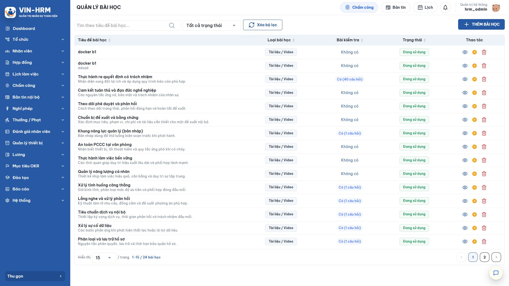
4.2. Tạo bài học
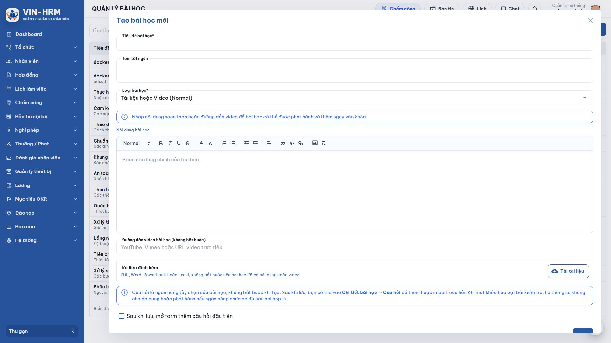
- Trên danh sách, chọn Thêm bài học.
- Nhập Tiêu đề bài học và Tóm tắt ngắn. Tiêu đề là bắt buộc; tóm tắt giúp người học hiểu mục tiêu trước khi mở bài.
- Chọn Loại bài học: Tài liệu hoặc Video (Thông thường), hoặc Học trực tuyến.
- Với bài thông thường, soạn Nội dung bài học; có thể thêm đường dẫn YouTube, Vimeo hoặc video trực tiếp; tải tài liệu PDF, Word, PowerPoint hoặc Excel nếu cần.
- Đảm bảo bài có ít nhất một nguồn nội dung thực tế: nội dung soạn thảo, video hoặc tài liệu. Không nên tạo bài chỉ có tiêu đề.
- Nếu muốn tạo câu hỏi ngay, bật Sau khi lưu, mở biểu mẫu thêm câu hỏi đầu tiên.
- Lưu bài học, kiểm tra lại nội dung và chuyển bài sang trạng thái hoạt động khi sẵn sàng đưa vào khóa.
Ý nghĩa hai loại bài học
| Loại | Nội dung và cách hoàn thành | Cấu hình bổ sung |
|---|---|---|
| Tài liệu hoặc Video (Thông thường) | Người học xem nội dung, video hoặc tệp đính kèm rồi chọn xác nhận đã học xong. Nếu có bài kiểm tra bắt buộc, phải đạt bài kiểm tra mới hoàn tất bài. | Nội dung soạn thảo, URL video, tệp đính kèm và ngân hàng câu hỏi được quản lý tại bài học. |
| Học trực tuyến | Người học xem lịch, giảng viên và liên kết tham gia. Chỉ có thể xác nhận hoàn thành theo điều kiện thời gian sau khi buổi học kết thúc. | Lịch, giảng viên và đường dẫn được cấu hình khi bài được thêm vào từng phiên bản khóa học, vì mỗi khóa có thể tổ chức buổi khác nhau. |
4.3. Chỉnh sửa nội dung bài học
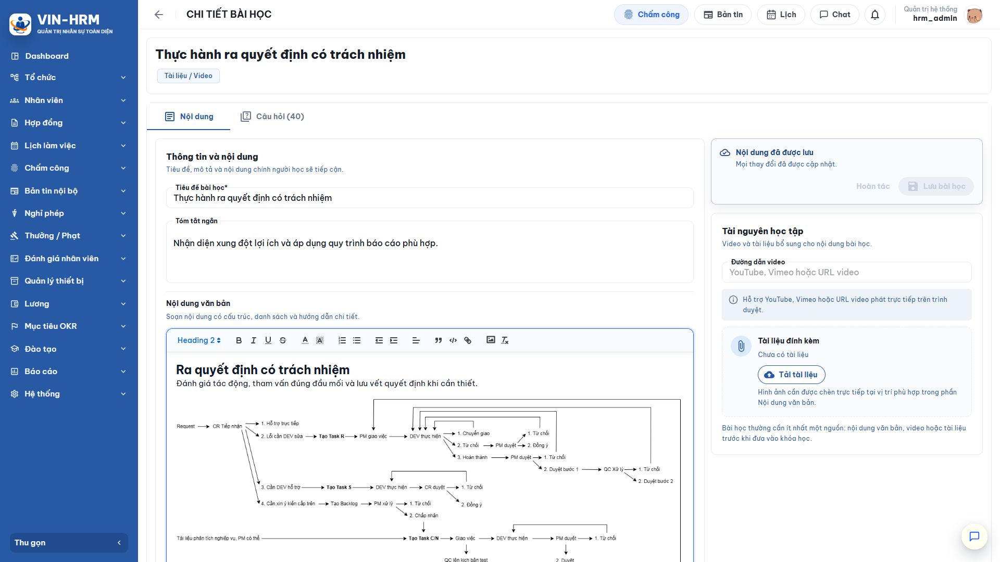
Mở thao tác Chi tiết của bài học. Tại thẻ Nội dung, chỉnh tiêu đề, tóm tắt, nội dung, video và tài liệu. Hãy kiểm tra liên kết video, khả năng mở tệp và nội dung hiển thị trước khi kích hoạt. Nếu bài đã được dùng trong phiên bản có người học, chỉ sửa khi hiểu rõ ảnh hưởng; với thay đổi lớn nên tạo bài mới hoặc dùng phiên bản khóa học mới để giữ ổn định lịch sử.
4.4. Tạo và quản lý ngân hàng câu hỏi
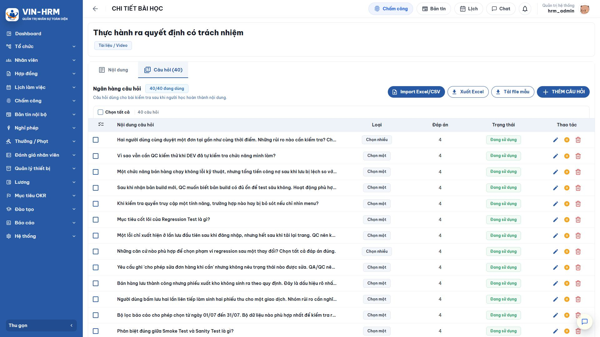
Mở thẻ Câu hỏi. Có thể thêm từng câu, nhập hàng loạt từ Excel/CSV, tải tệp mẫu, xuất Excel để rà soát và chọn nhiều câu để xóa hoặc ngừng hoạt động theo điều kiện hệ thống.
| Loại câu hỏi | Quy tắc đáp án | Cách chấm |
|---|---|---|
| Một lựa chọn | Có ít nhất hai đáp án đang hoạt động và đúng chính xác một đáp án. | Người học phải chọn đúng đáp án duy nhất. |
| Nhiều lựa chọn | Có ít nhất hai đáp án đang hoạt động và có ít nhất một đáp án đúng. | Phải chọn đủ tất cả đáp án đúng và không chọn bất kỳ đáp án sai nào. |
- Chọn Thêm câu hỏi, nhập nội dung câu hỏi và chọn loại Một lựa chọn hoặc Nhiều lựa chọn.
- Nhập tối thiểu hai phương án trả lời; đánh dấu phương án đúng theo quy tắc của loại câu.
- Đặt câu hỏi ở trạng thái hoạt động để có thể được lấy vào đề.
- Kiểm tra số câu hoạt động phải đủ cho cấu hình của bài kiểm tra và bài thi cuối khóa.
- Với dữ liệu lớn, tải tệp mẫu, nhập đúng cấu trúc rồi dùng chức năng Nhập; sau đó rà lại các dòng lỗi và sửa trước khi phát hành khóa.
| Không xóa câu hỏi đã phát sinh lượt thi Câu hỏi hoặc đáp án đã được dùng trong lượt thi phải được giữ để bảo toàn lịch sử. Khi không muốn dùng cho đề mới, chuyển sang Ngừng hoạt động. Các lượt đã nộp tiếp tục được chấm và hiển thị theo bản chụp dữ liệu tại thời điểm thi. |
4.5. Trạng thái và thao tác với bài học
| Trạng thái/thao tác | Ý nghĩa |
|---|---|
| Bản nháp | Nội dung đang biên soạn, chưa nên đưa vào phiên bản phát hành. |
| Đang hoạt động | Bài đủ điều kiện lựa chọn khi thiết kế cấu trúc khóa học. |
| Ngừng hoạt động | Bài không còn dùng cho cấu trúc mới nhưng dữ liệu cũ vẫn được giữ. |
| Xóa | Chỉ thực hiện khi bài chưa bị ràng buộc bởi phiên bản, lượt học hoặc dữ liệu liên quan. Nếu đã được sử dụng, hãy ngừng hoạt động thay vì xóa. |
5. Đăng ký học
5.1. Mở danh mục khóa học
Nhân viên mở Đào tạo > Đăng ký học. Màn hình chỉ hiển thị các phiên bản đã phát hành của khóa đang mở và phù hợp với người dùng hiện tại. Có thể nhập tên khóa vào ô tìm kiếm hoặc chọn Xóa bộ lọc.
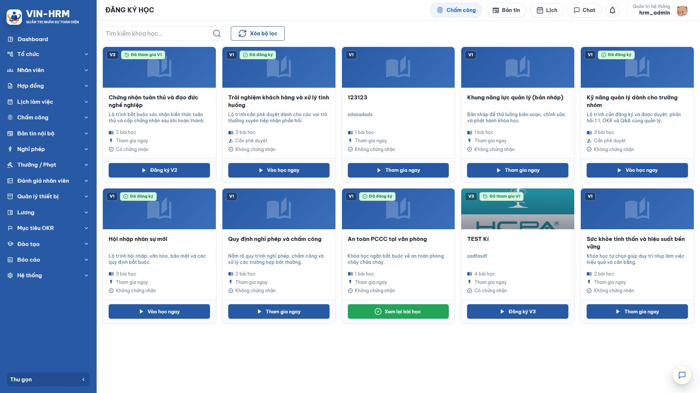
| Thông tin/nút | Cách hiểu |
|---|---|
| V1, V2, V3 | Phiên bản nội dung sẽ được đăng ký. Nếu đã học V1 và V2 được phát hành, thẻ có thể hiển thị nút Đăng ký V2. |
| Tham gia ngay/Học ngay | Khóa không cần duyệt. Nhấn nút để tạo đăng ký và mở màn hình học. |
| Đăng ký | Khóa cần phê duyệt. Nhấn để gửi yêu cầu theo quy trình đã cấu hình. |
| Đang chờ duyệt | Yêu cầu đã gửi và chưa hoàn tất. Người học chưa được vào học; có thể thu hồi/hủy nếu trạng thái và quy trình cho phép. |
| Đã đăng ký/Vào học ngay | Đăng ký đã được tạo hoặc phê duyệt; chọn để tiếp tục học. |
| Xem lại bài học | Khóa đã hoàn thành hoặc đóng nhưng người học được xem lại nội dung theo quyền hệ thống. |
| Có/Không chứng nhận | Cho biết phiên bản có cấu hình cấp chứng nhận sau khi đáp ứng điều kiện hay không. |
5.2. Tham gia khóa Học ngay
- Tìm đúng khóa và kiểm tra phiên bản, số bài, cách tham gia, thông tin chứng nhận.
- Chọn Tham gia ngay.
- Xác nhận nếu hệ thống yêu cầu. Đăng ký được tạo ngay và khóa xuất hiện tại Khóa học của tôi.
- Chọn Vào học ngay hoặc mở Đào tạo > Khóa học của tôi để bắt đầu.
5.3. Gửi đăng ký khóa Cần phê duyệt
- Chọn Đăng ký trên thẻ khóa học.
- Đọc thông tin khóa và quy trình áp dụng; nhập nội dung đề nghị nếu biểu mẫu yêu cầu.
- Gửi yêu cầu. Trạng thái chuyển sang Chờ phê duyệt.
- Theo dõi tại Đăng ký học hoặc Khóa học của tôi. Người học chỉ mở được nội dung sau khi yêu cầu được duyệt hoàn tất.
- Nếu bị từ chối, đọc lý do. Khi phiên bản còn mở và hệ thống cho phép, sửa nguyên nhân rồi đăng ký lại.
Người có quyền mở Đào tạo > Duyệt đăng ký, chọn yêu cầu thuộc bước mình xử lý, đọc thông tin người học và khóa học rồi Duyệt hoặc Từ chối. Việc có quyền truy cập màn hình không đồng nghĩa được xử lý mọi yêu cầu; tài khoản phải là người xử lý của bước hiện tại.
5.4. Vòng đời đăng ký học
| Trạng thái | Ý nghĩa và hành động tiếp theo |
|---|---|
| Chờ phê duyệt | Yêu cầu đã gửi, chưa được học. Chờ người duyệt hoặc thu hồi nếu được phép. |
| Đã duyệt | Yêu cầu được chấp thuận; khóa sẵn sàng để người học bắt đầu. |
| Bị từ chối | Yêu cầu không được chấp thuận. Xem lý do và đăng ký lại nếu điều kiện cho phép. |
| Đang học | Người học đã bắt đầu hoặc có tiến độ trong khóa. |
| Hoàn thành | Đã hoàn tất các nội dung bắt buộc và đạt điều kiện đánh giá. |
| Chưa đạt | Đã đi đến giai đoạn đánh giá nhưng kết quả chưa đạt; có thể thi lại nếu còn lượt. |
| Đã hủy | Đăng ký không còn hiệu lực. Có thể đăng ký lại khi phiên bản còn mở và chính sách cho phép. |
6. Khóa học của tôi và thực hiện học tập
6.1. Theo dõi danh sách cá nhân
Mở Đào tạo > Khóa học của tôi. Thẻ Tất cả hiển thị toàn bộ đăng ký; Đang học tập trung các khóa cần tiếp tục; Đã hoàn thành hiển thị khóa đã đạt. Mỗi dòng có mã, phiên bản, trạng thái, tiến độ, kết quả cuối khóa và chứng nhận nếu có.
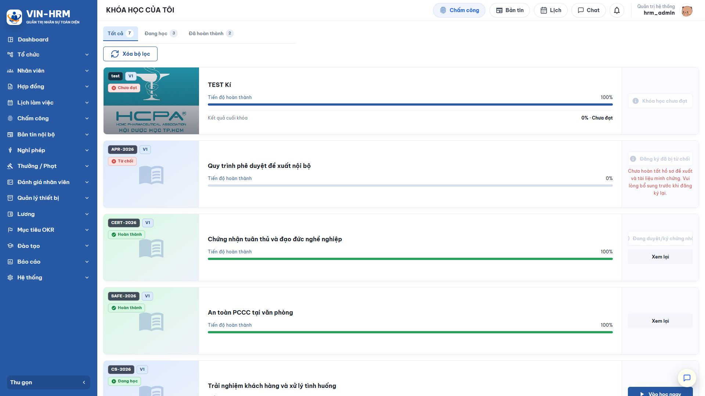
Chọn Tiếp tục học/Vào học để mở khóa đang học; chọn Xem lại với khóa đã hoàn thành; chọn Chứng nhận khi chứng nhận đã có hiệu lực. Với đăng ký chờ duyệt hoặc bị từ chối, hành động hiển thị phụ thuộc trạng thái hiện tại.
6.2. Đọc màn hình học tập
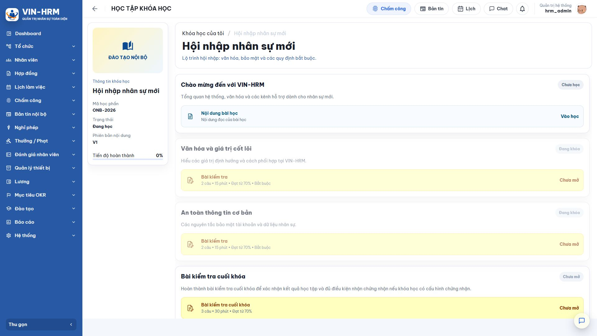
| Khu vực | Ý nghĩa |
|---|---|
| Thông tin khóa học | Hiển thị mã, phiên bản, trạng thái đăng ký và tiến độ hiện tại. |
| Danh sách bài học | Sắp xếp theo cấu trúc do quản trị viên thiết kế; bài bắt buộc ảnh hưởng điều kiện hoàn thành. |
| Nội dung bài học | Cho biết nội dung đọc, video, tệp hoặc thông tin buổi trực tuyến. |
| Bài kiểm tra | Hiển thị số câu, thời gian, điểm đạt và tính bắt buộc. Chỉ xuất hiện khi bài được cấu hình kiểm tra. |
| Bài thi cuối khóa | Xuất hiện khi phiên bản yêu cầu thi cuối khóa; thường chỉ thực hiện sau khi đủ điều kiện các bài học. |
6.3. Học bài thông thường
- Chọn một bài đang mở. Nếu khóa học tuần tự, hoàn thành bài trước khi mở bài sau.
- Đọc nội dung, xem video và mở tài liệu đính kèm. Nếu liên kết hoặc tệp không mở, báo người phụ trách đào tạo kiểm tra nguồn nội dung.
- Chọn Xác nhận đã học xong sau khi thực sự hoàn tất nội dung.
- Nếu bài có kiểm tra bắt buộc, mở bài kiểm tra và đạt ngưỡng yêu cầu. Nếu kiểm tra không bắt buộc, việc không thi hoặc chưa đạt không chặn tiến độ bắt buộc.
- Quay lại danh sách bài học và kiểm tra trạng thái của bài.
6.4. Tham gia bài học trực tuyến
- Mở bài học để xem giảng viên, thời gian bắt đầu/kết thúc và đường dẫn tham gia.
- Tham gia đúng thời gian bằng đường dẫn được cung cấp. Nếu có nhiều lịch, chọn đúng buổi áp dụng cho mình.
- Sau khi buổi học kết thúc và hệ thống cho phép, chọn xác nhận hoàn thành.
- Làm bài kiểm tra sau buổi học nếu bài được cấu hình kiểm tra.
6.5. Làm bài kiểm tra và bài thi cuối khóa
- Đọc màn hình giới thiệu: số câu, điểm đạt, thời gian, số lượt còn lại, phương thức tính điểm và chính sách hiển thị kết quả.
- Chọn bắt đầu. Hệ thống lấy ngẫu nhiên câu hỏi và có thể đảo thứ tự đáp án.
- Trả lời từng câu. Đáp án được tự động lưu để có thể tiếp tục đúng lượt đang làm nếu phiên làm việc bị gián đoạn trong điều kiện hệ thống hỗ trợ.
- Chọn Nộp bài khi hoàn tất. Sau khi nộp, đáp án của lượt đó bị khóa. Nếu hết giờ, hệ thống tự nộp các đáp án đã lưu.
- Đọc kết quả theo chính sách của bài: có thể thấy điểm, đúng/sai từng câu hoặc đáp án đúng; không phải khóa nào cũng cho xem đầy đủ.
- Nếu chưa đạt và còn lượt, cân nhắc xem lại bài rồi làm lại. Kết quả tổng hợp dùng điểm cao nhất hoặc điểm trung bình đúng theo cấu hình.
| Không mở đồng thời một lượt thi ở nhiều cửa sổ Việc làm cùng một lượt trên nhiều tab hoặc thiết bị có thể gây ghi đè đáp án hoặc nộp ngoài ý muốn. Chỉ sử dụng một cửa sổ, bảo đảm kết nối ổn định và chủ động nộp trước khi hết giờ. |
6.6. Điều kiện hoàn thành khóa
Hệ thống chỉ xác định hoàn thành khi người học đáp ứng đầy đủ các điều kiện của phiên bản:
- Hoàn thành tất cả bài học được đánh dấu bắt buộc.
- Đạt các bài kiểm tra bài học bắt buộc.
- Nếu có bài thi cuối khóa, đạt ngưỡng của bài thi theo phương thức tính điểm đã cấu hình.
- Không còn điều kiện bắt buộc nào bị khóa hoặc chưa được xác nhận.
Tiến độ nội dung có thể đạt 100% nhưng trạng thái vẫn Chưa đạt nếu bài thi cuối khóa chưa đạt. Ngược lại, một bài học không bắt buộc có thể chưa hoàn thành mà khóa vẫn đủ điều kiện, tùy cấu trúc phiên bản.
7. Kết quả học tập và chứng nhận
7.1. Xem kết quả cá nhân
Mở Đào tạo > Kết quả học tập. Màn hình này tập trung các khóa đã có kết quả hoàn thành hoặc chưa đạt của chính nhân viên đang đăng nhập. Dữ liệu của người khác không hiển thị tại đây.
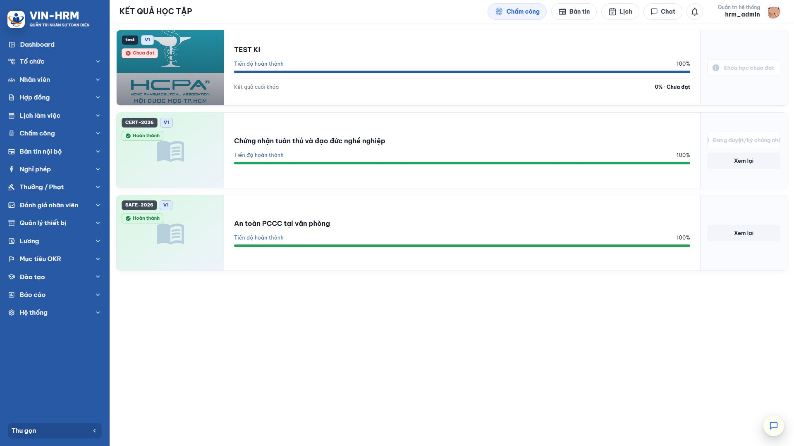
| Thông tin | Cách đọc |
|---|---|
| Tiến độ hoàn thành | Tỷ lệ nội dung bắt buộc đã hoàn tất. Đây không phải luôn là điểm thi. |
| Kết quả cuối khóa | Điểm tổng hợp của bài thi cuối khóa và trạng thái Đạt/Chưa đạt nếu phiên bản có yêu cầu thi. |
| Hoàn thành | Đã đáp ứng đầy đủ điều kiện của phiên bản. |
| Chưa đạt | Chưa đạt điều kiện đánh giá. Mở lại khóa để xem còn lượt thi hoặc nội dung bắt buộc nào chưa hoàn tất. |
| Chứng nhận | Chỉ hiển thị/tải được khi khóa có cấu hình chứng nhận, người học đã hoàn thành và quy trình duyệt/ký đã kết thúc thành công. |
7.2. Quy trình hình thành chứng nhận
- Người học hoàn thành khóa và đạt các điều kiện đã cấu hình.
- Hệ thống tạo hồ sơ chứng nhận từ mẫu tài liệu đã chọn.
- Hồ sơ chuyển qua các bước duyệt/ký. Người xử lý mở Đào tạo > Duyệt/ký chứng nhận theo quyền.
- Sau khi hoàn tất, chứng nhận chuyển sang trạng thái có hiệu lực và người học có thể mở hoặc tải tại Khóa học của tôi/Kết quả học tập.
Nếu người học đã hoàn thành nhưng chưa thấy chứng nhận, cần kiểm tra lần lượt: khóa có bật cấp chứng nhận không; mẫu và quy trình có hợp lệ không; hồ sơ đang chờ ai xử lý; có bước ký thất bại hoặc bị từ chối không.
7.3. Xem kết quả ở góc độ quản lý
Người có quyền xem kết quả đào tạo có thể mở Đào tạo > Tổng quan để theo dõi dữ liệu theo phạm vi được cấp. Màn hình dành cho quản lý khác với Kết quả học tập cá nhân: quản lý có thể xem nhiều nhân viên, trong khi Kết quả học tập chỉ hiển thị dữ liệu của người đang đăng nhập.
8. Các tình huống vận hành điển hình
8.1. Khóa tự học, không cần duyệt
- Tạo các bài thông thường và kích hoạt.
- Tạo khóa với cách tham gia Học ngay; chọn Tự do nếu bài độc lập hoặc Tuần tự nếu là lộ trình.
- Thêm bài, đánh dấu nội dung bắt buộc và phát hành.
- Nhân viên chọn Tham gia ngay, học nội dung và xem kết quả.
8.2. Khóa cần quản lý phê duyệt
- Chuẩn bị quy trình Duyệt đăng ký học và người xử lý.
- Tạo khóa với cách tham gia Cần phê duyệt, chọn đúng quy trình rồi phát hành.
- Nhân viên gửi đăng ký; người duyệt xử lý.
- Chỉ sau khi được duyệt, nhân viên mới vào học. Trường hợp từ chối cần ghi lý do rõ ràng.
8.3. Khóa có kiểm tra và chứng nhận
- Tạo đủ câu hỏi hợp lệ cho từng bài học.
- Cấu hình bài kiểm tra bắt buộc hoặc bài thi cuối khóa, kiểm tra số câu không vượt ngân hàng.
- Bật cấp chứng nhận, chọn mẫu và quy trình duyệt/ký.
- Phát hành; người học hoàn thành và đạt bài thi.
- Theo dõi hồ sơ chứng nhận đến khi ký/duyệt hoàn tất.
8.4. Phát hành phiên bản mới
- Không thay đổi trực tiếp phiên bản đã có người học.
- Tạo bản nháp V2 từ khóa hiện tại, điều chỉnh nội dung, câu hỏi, cấu trúc và cấu hình.
- Kiểm tra điều kiện và phát hành V2.
- Giữ nguyên kết quả V1. Người học đăng ký V2 như một phiên bản mới khi cần.
9. Lỗi thường gặp và cách xử lý
| Hiện tượng | Nguyên nhân thường gặp | Cách kiểm tra/xử lý |
|---|---|---|
| Không phát hành được phiên bản | Thiếu bài học; thay đổi chưa lưu; thiếu câu hỏi; bài trực tuyến chưa có lịch; thiếu quy trình hoặc mẫu chứng nhận. | Đọc danh sách cảnh báo sẵn sàng phát hành và sửa từng điều kiện; lưu lại trước khi phát hành. |
| Không thấy bài học để thêm | Bài còn nháp/ngừng hoạt động hoặc tài khoản không có quyền/phạm vi phù hợp. | Kích hoạt bài học, kiểm tra quyền quản lý bài học và tải lại danh sách. |
| Không thấy khóa ở Đăng ký học | Phiên bản chưa phát hành; khóa tạm dừng/đóng; phiên bản không còn nhận đăng ký. | Kiểm tra trạng thái khóa và phiên bản tại Quản lý khóa học. |
| Đăng ký chờ lâu | Quy trình chưa xác định được người xử lý, người duyệt chưa thao tác hoặc bước trước chưa hoàn tất. | Kiểm tra lịch sử yêu cầu, bước hiện tại và cấu hình người xử lý của quy trình. |
| Bài sau bị khóa | Khóa dùng phương thức Tuần tự và bài trước chưa hoàn thành/kiểm tra chưa đạt. | Mở bài trước, xác nhận nội dung và hoàn thành kiểm tra bắt buộc. |
| Không thể xác nhận bài trực tuyến | Buổi học chưa kết thúc hoặc lịch cấu hình chưa hợp lệ. | Kiểm tra thời gian buổi học, múi giờ và lịch được gắn với phiên bản. |
| Không có bài kiểm tra | Kiểm tra chưa bật, cấu hình không hợp lệ hoặc ngân hàng câu hỏi không đủ. | Kiểm tra cấu hình của bài trong thẻ Cấu trúc và trạng thái câu hỏi. |
| Tiến độ 100% nhưng Chưa đạt | Bài thi cuối khóa chưa đạt hoặc cách tính điểm tổng hợp chưa đạt ngưỡng. | Mở lịch sử lượt thi, kiểm tra điểm cao nhất/trung bình và số lượt còn lại. |
| Không thấy chứng nhận | Khóa không cấp chứng nhận; chưa hoàn thành; chứng nhận đang chờ duyệt/ký hoặc bị từ chối. | Kiểm tra cấu hình phiên bản và trạng thái hồ sơ tại Duyệt/ký chứng nhận. |
| Không xóa được câu hỏi/bài học | Dữ liệu đã được dùng trong phiên bản hoặc lượt học/lượt thi. | Chuyển sang Ngừng hoạt động để bảo toàn lịch sử thay vì xóa. |
10. Danh sách kiểm tra trước khi đưa khóa học vào sử dụng
10.1. Người phụ trách đào tạo
- □ Tên, mã, mô tả và ảnh đại diện rõ ràng, không trùng hoặc gây nhầm lẫn.
- □ Chọn đúng Học ngay/Cần phê duyệt và đúng quy trình nếu cần duyệt.
- □ Chọn đúng Tự do/Tuần tự theo mục tiêu học.
- □ Bài học đúng thứ tự; bài bắt buộc đã được đánh dấu.
- □ Nội dung, video và tệp đính kèm mở được bằng tài khoản người học.
- □ Bài trực tuyến có giảng viên, thời gian và liên kết hợp lệ.
- □ Câu hỏi có đủ đáp án, đúng loại, đúng đáp án và đang hoạt động.
- □ Số câu trong cấu hình không vượt số câu hợp lệ của ngân hàng.
- □ Điểm đạt, thời gian, số lượt làm lại và phương thức tính điểm đã được giải thích cho người học.
- □ Chính sách hiển thị điểm/đáp án phù hợp với yêu cầu bảo mật đề.
- □ Nếu cấp chứng nhận, mẫu và quy trình duyệt/ký đã sẵn sàng.
- □ Đã kiểm tra cảnh báo và phát hành đúng phiên bản.
10.2. Người học
- □ Kiểm tra đúng khóa và đúng phiên bản trước khi đăng ký.
- □ Theo dõi trạng thái phê duyệt nếu khóa cần duyệt.
- □ Đọc yêu cầu bắt buộc, thứ tự bài và lịch trực tuyến.
- □ Làm bài thi bằng một cửa sổ, có kết nối ổn định và nộp trước khi hết giờ.
- □ Sau khi học, kiểm tra cả tiến độ, kết quả Đạt/Chưa đạt và trạng thái chứng nhận.